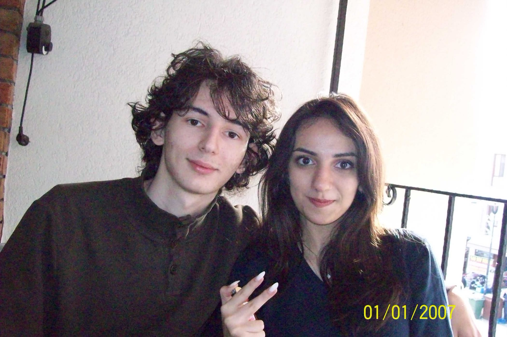
14 Eylül günü, üniversitenin ilk senesinde okulun tam olarak ne zaman açılacağını bilmediğim için sınıf grubuna derslerin başlayıp başlamadığını sormuştum.
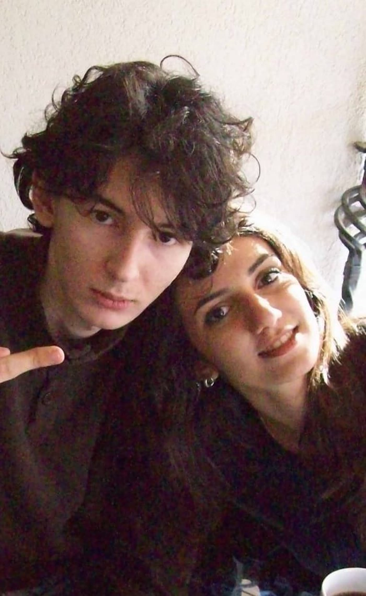
O koca grupta bana tek cevap veren sendin.
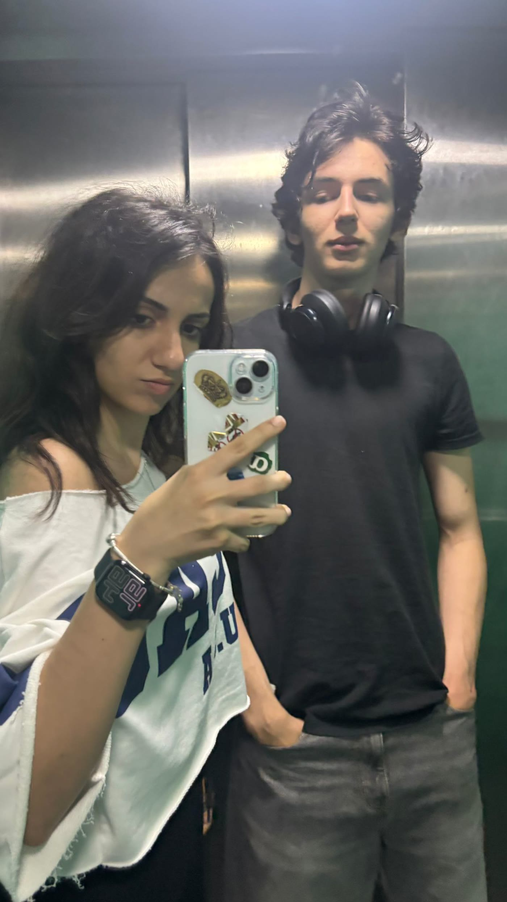
Bilmediğini ama bir haber alırsam sana da söylememi istemiştin.
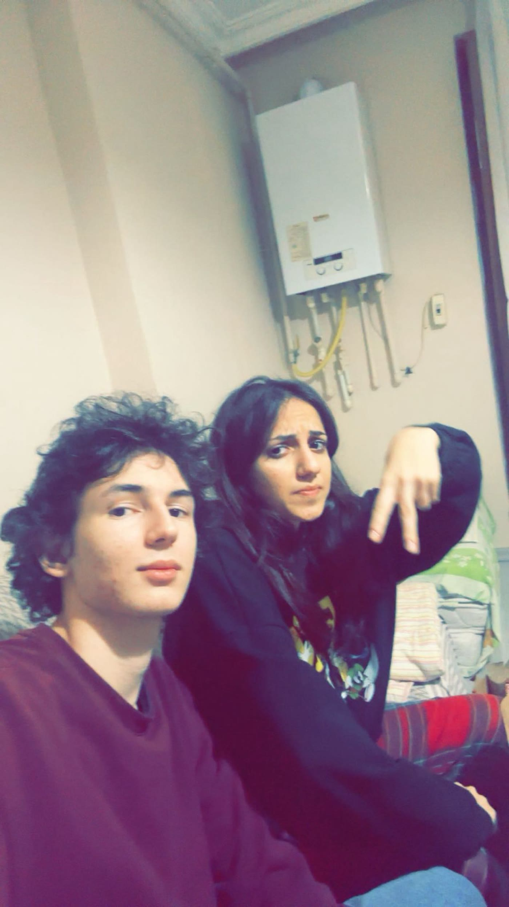
Ben İstanbul’da olduğumu, dersler başladığında Edirne’ye geleceğimi söyleyince sen benden önce davranıp sabah okula gittin ve derslerin ertesi gün başlayacağını bana haber ettin.
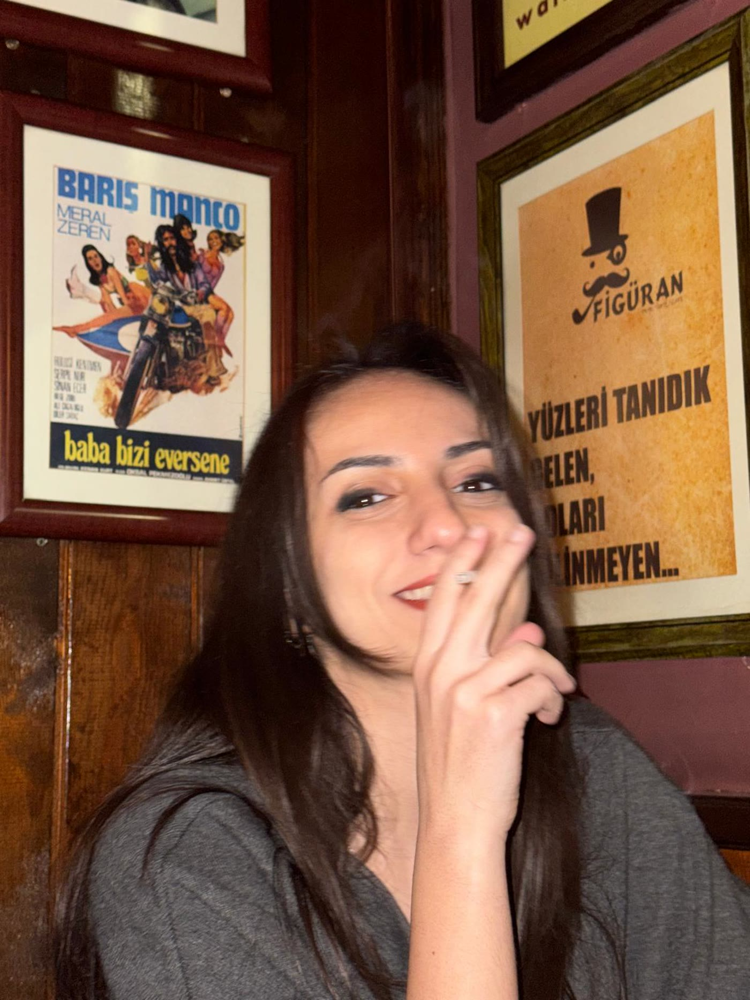
O günün gecesi apar topar bir otobüse atlayıp Edirne’ye geldim, yurda yerleştim ve 16 Eylül sabahı dersten önce merkeze inip Mimar Sinan heykelinin önünde seninle buluştum.
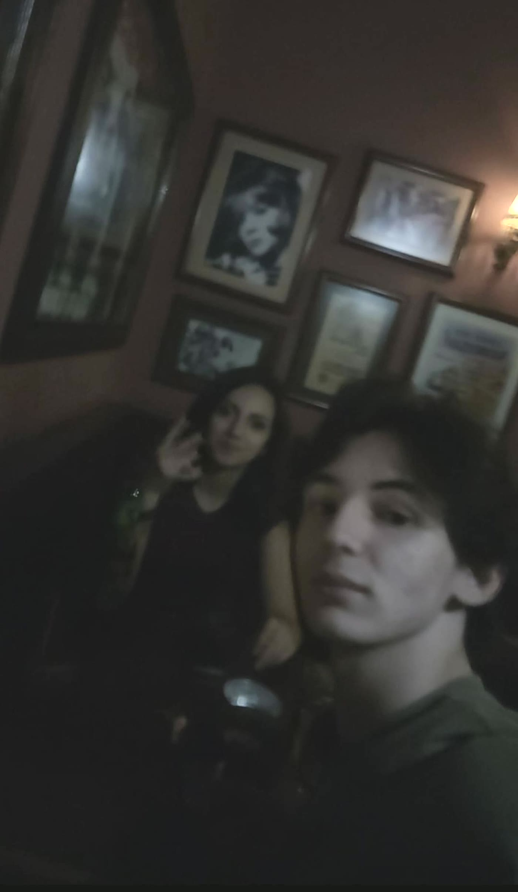
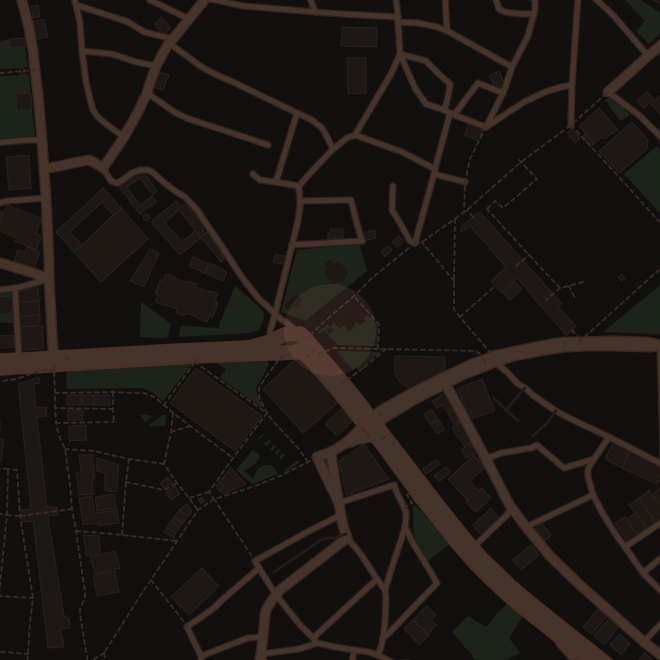
Mimar Sinan Heykeli Edirne merkez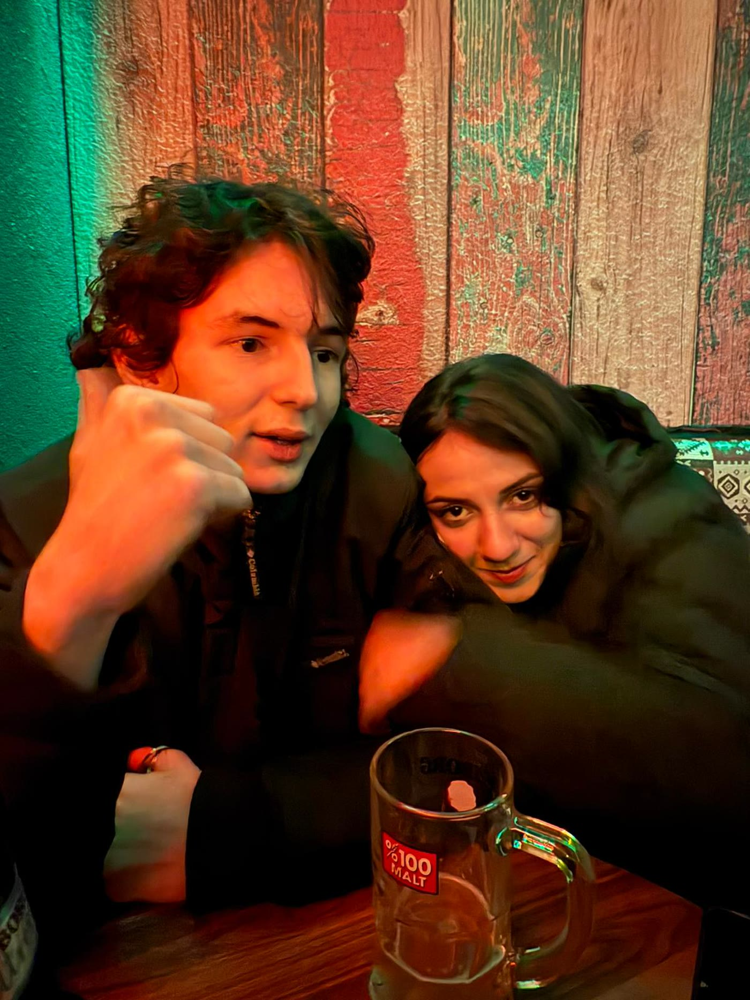
Birlikte çay içip tost yedik, sonra da ilk derse girdik.
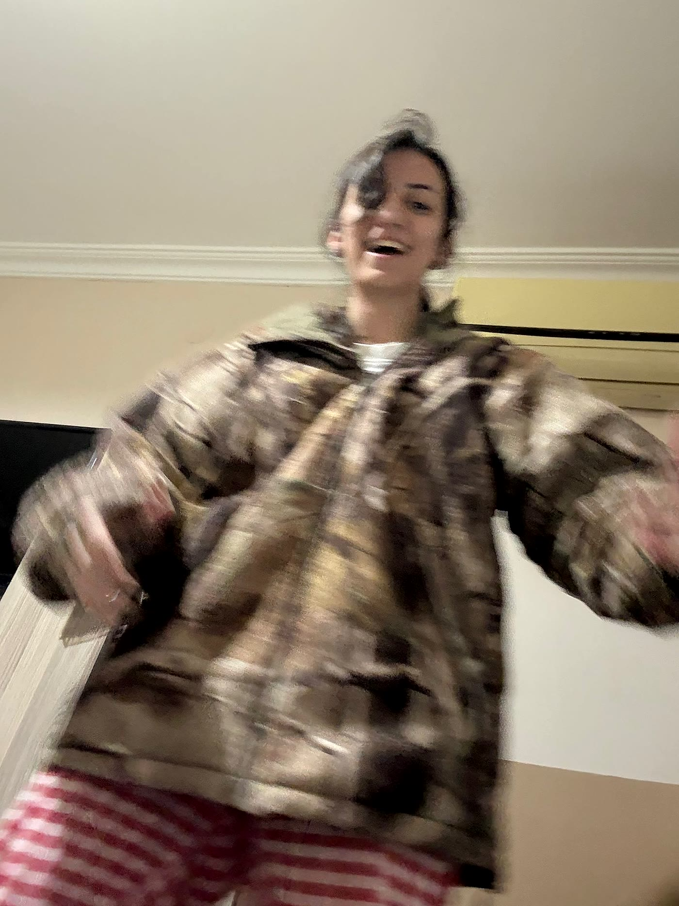
O günden beri Edirne’de her günüm bir şekilde seninle geçti.
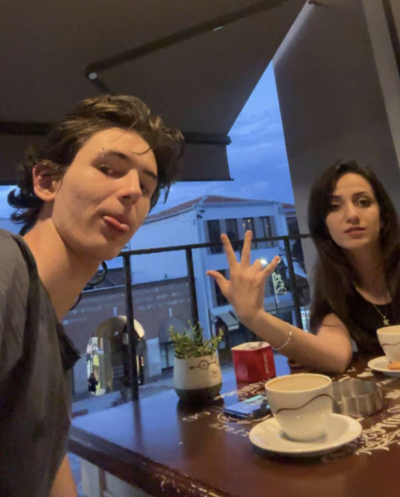
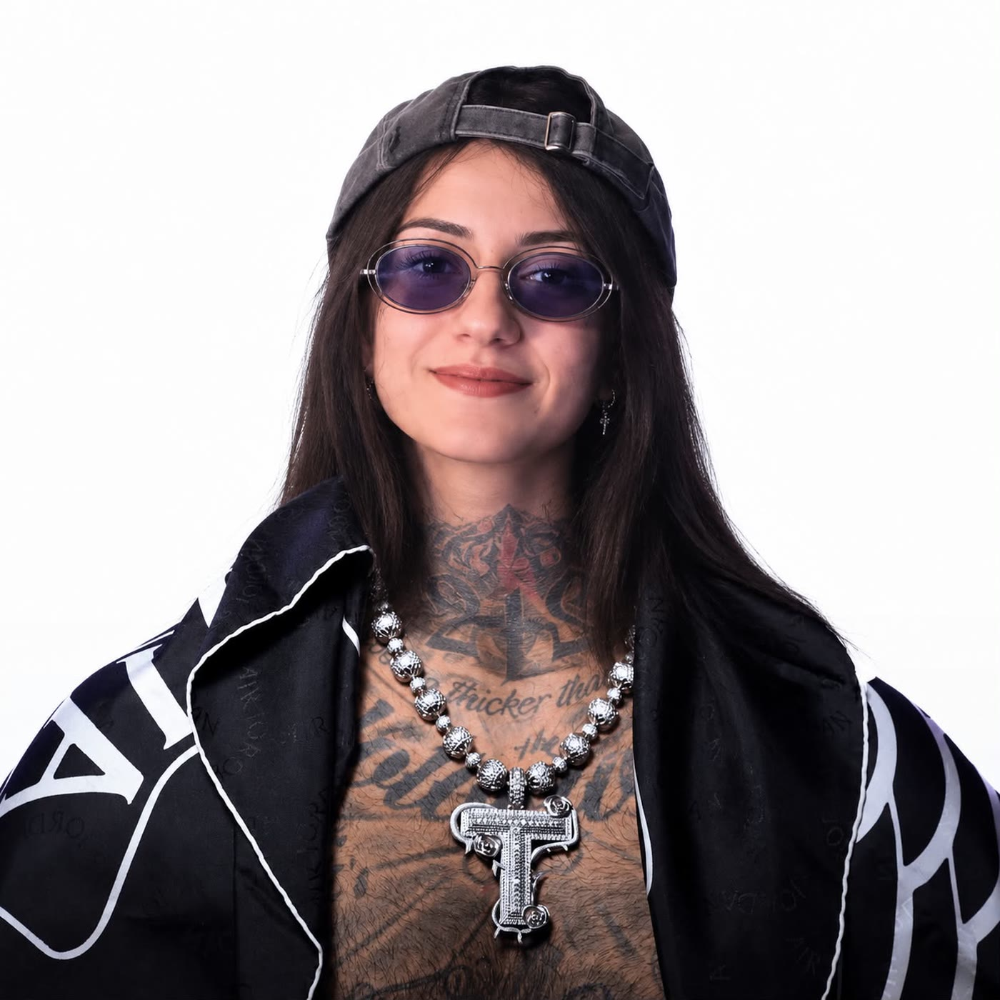
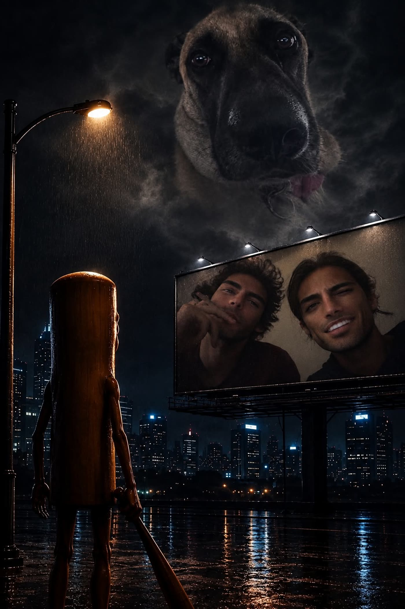